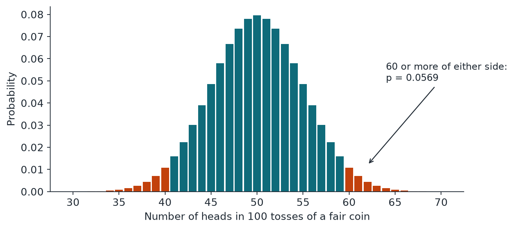
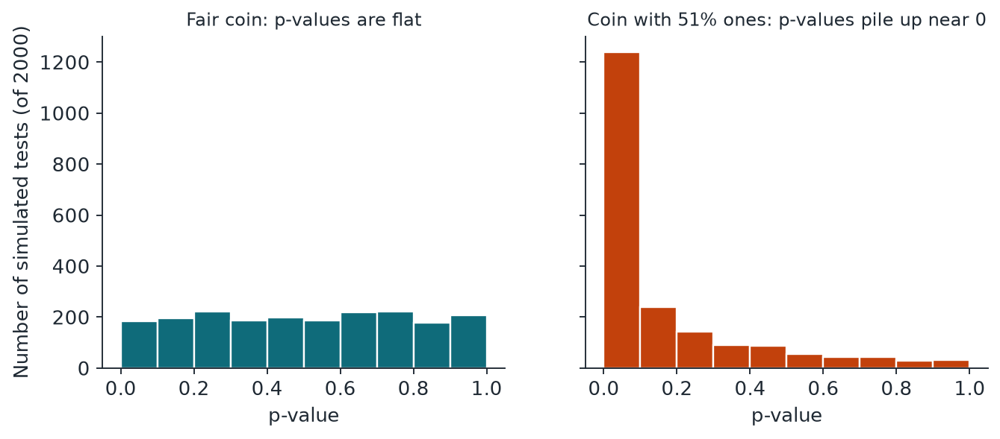

Chapter 1: Random Numbers and the Coin-Flip Model¶
This chapter fixes the picture that every later test refers to. A stream of bytes is called random when it is evenly spread and unpredictable, and a test measures how well real data fits one simple model: independent fair coin flips. You will meet the null hypothesis, the p-value and the line \(\alpha\) at which a test fails, and you will see exactly what a p-value does and does not say. Almost every misreading of a randomness test comes from getting one of these ideas wrong, so the chapter is worth reading slowly.
1.1 What "random" means here¶
When we call a stream of bytes random, we mean two things. First, it is evenly spread: every value turns up about equally often, and every combination does too. Second, it is unpredictable: however much of the stream you have seen, you cannot guess the next bit better than a coin toss.
The first property is easy to fake. The second is the one that protects a cryptographic key. Keep that gap in mind, because it explains most of what these tests can and cannot do.
There are four families of generator you will meet.
| Name | Stands for | Where the bits come from | Examples |
|---|---|---|---|
| PRNG | Pseudo-random number generator | A formula. A short seed fixes every later output. Weak ones give away their internal state in their output. | MT19937, java.util.Random, RANDU, xorshift |
| CSPRNG | Cryptographically secure PRNG | Also a formula, but designed so that nobody can recover the state or predict the next output with any practical amount of work. | SHA-256 counter mode, AES-OFB, Threefish, os.urandom |
| TRNG | True random number generator | A physical noise source. | CPU timing jitter, random.org atmospheric noise, Intel RDSEED |
| QRNG | Quantum random number generator | A physical source based on a quantum process. | The ANU vacuum-fluctuation data |
Physical sources are usually a little uneven when they come straight off the hardware. So they normally pass through a conditioner, often a hash function, which smooths them out. We say "raw" for the bits before conditioning and "conditioned" for the bits after. That difference will matter a lot.
1.2 Bits, bytes and the coin-flip model¶
Picture a fair coin. Heads is 1, tails is 0. One flip is one bit. Eight flips make a byte, which can take \(2^8 = 256\) values. Four bytes make a 32-bit word. A mebibyte (MiB) is 1,048,576 bytes, or 8,388,608 flips.
Our reference model is simply this: every flip is fair, and no flip knows anything about any other. Statisticians call this "independent and identically distributed", or i.i.d. In this model every byte value has probability \(1/256\), whatever came before it. Every test in this guide asks how well the data fits that one picture.
1.3 The null hypothesis and the p-value¶
The coin-flip model is our null hypothesis: the boring claim that nothing is going on. We never prove it. We only ask whether the data is surprising under it. The size of that surprise is the p-value:
Say you toss a coin 100 times and get 60 heads. If the coin is fair, a result at least that lopsided (60 or more of either side) happens with probability 0.0569. That is a little unusual, nothing more.

We pick a line in advance, called \(\alpha\), and we use \(\alpha = 0.01\). A test fails when \(p < 0.01\).
Here is what \(p = 0.01\) means, and what it does not.
- It does mean: if the source were perfect, a result this extreme would turn up about 1 time in 100.
- It does not mean there is a 1% chance the source is good. A p-value says how odd the data is under the model, not how likely the model is.
- It does not measure how bad a defect is. A tiny bias in a huge file can give a tiny p-value.
- A pass does not mean the source is good. It only means this one test saw nothing.
- A perfect source will fail now and then. At \(\alpha = 0.01\), about 1 sample in 100 fails each test, purely by luck. That is the test working properly, not a fault.

We call a test valid when it fails good data at most about 1% of the time. A conservative test fails good data less often than that. It is allowed, and it costs a little sensitivity.
1.4 Summary¶
- A random stream should be evenly spread and unpredictable. Evenness is easy to fake; unpredictability is what protects a key.
- The four families of generator are the PRNG, the CSPRNG, the TRNG and the QRNG. Physical sources usually pass through a conditioner, so we distinguish raw bits from conditioned bits.
- The reference model is i.i.d. fair coin flips: every bit fair, every bit independent. Every test asks how well the data fits that picture.
- The p-value is the probability, under the null hypothesis, of a result at least as extreme as the one seen. It is not the probability that the source is good, and it does not measure how bad a defect is.
- A test fails when \(p<\alpha\), with \(\alpha=0.01\) here. A perfect source fails each test about 1 time in 100 by luck alone, which is the test working properly.
1.5 Exercises¶
-
A fair coin is tossed 100 times and lands heads 60 times. Compute the z-score, and use the normal approximation to find the two-sided p-value. The exact binomial value is 0.0569. Which of the two is more reliable here, and does the result fail at \(\alpha=0.01\)?
Answer
With \(n=100\) the expected number of heads is 50 and the standard deviation is \(\sqrt{n/4}=5\), so \(z=(60-50)/5=2\). Then \(p=\mathrm{erfc}(2/\sqrt2)=0.0455\). The exact binomial value, 0.0569, is the more reliable for a count this small, because the bell curve is only an approximation to the binomial. Both values are above 0.01, so the result does not fail: it is a little unusual, nothing more.
-
A generator gives a p-value of 0.01 on one test. For each statement, say whether it is correct and why. (a) There is a 1% chance that the generator is good. (b) A perfect generator would give a result this extreme about once in 100 runs. (c) The defect is serious.
Answer
(a) Wrong. A p-value says how odd the data is under the model, not how likely the model is. (b) Correct. That is the definition. (c) Wrong. A p-value does not measure the size of a defect: a tiny bias in a huge file can give a tiny p-value.
-
Explain why the string 0101... of 1000 bits gets a perfect score from the simple count of ones, and what that shows about the words "evenly spread".
Answer
Exactly half of the bits are ones, so the count of ones equals its expected value and the p-value is 1. The string is perfectly balanced yet completely predictable. This shows that an even spread is necessary but not sufficient: it is the easy property to fake, whereas unpredictability is the property that protects a cryptographic key.
-
Give an example from each of the four generator families and say where its bits come from.
Answer
PRNG: MT19937 or java.util.Random; the bits come from a formula and a short seed. CSPRNG: SHA-256 in counter mode, AES-OFB or os.urandom; also a formula, but one that no practical work can predict. TRNG: CPU timing jitter or atmospheric noise; the bits come from a physical noise source. QRNG: vacuum-fluctuation data; the bits come from a quantum process.
-
Why do physical sources usually pass through a conditioner, and why does the book distinguish "raw" from "conditioned" bits?
Answer
Bits straight off the hardware are usually a little uneven, so a conditioner, often a hash function, smooths them. The distinction matters because conditioning can hide a weak source: the conditioned output may look like perfect coin flips whatever the quality of the raw noise, so tests on conditioned bits say little about the source itself (Chapter 2 develops this).